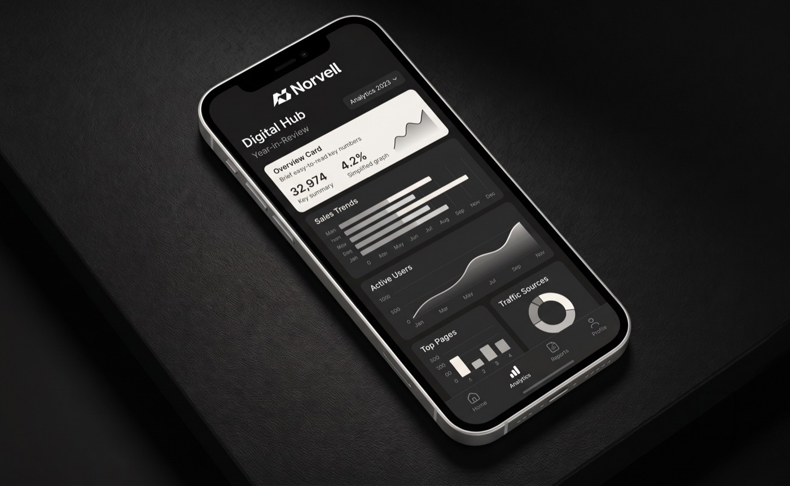

CASE STUDY · Plataforma de analítica
Norvell
Una plataforma de analítica digital con un producto sólido, pero una imagen que no comunicaba la confianza ni la precisión que ofrecía.

EL RETO
Norvell competía con dashboards de gigantes, pero su marca se veía genérica y fría. Los clientes potenciales no percibían la robustez del producto en el primer contacto.
QUÉ HICIMOS
Construimos una identidad monocromática de alto contraste — wordmark geométrico, sistema de datos y un lenguaje visual que traduce «claridad» a cada pantalla. El agente preparó la dirección; nuestro equipo la afinó pieza por pieza.
EL RESULTADO
Una marca que se siente tan precisa como el producto: coherente del dashboard a la papelería, lista para escalar con cada nueva función.
